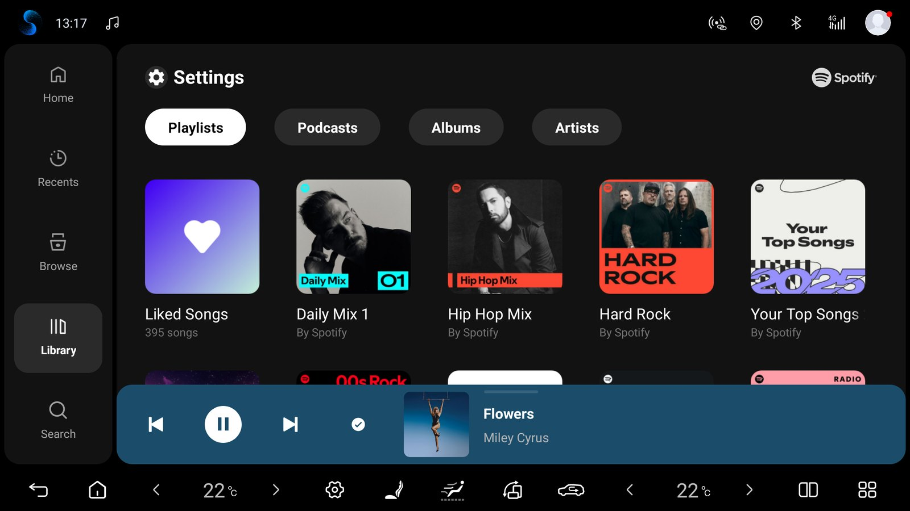

النمط الجديد
تصميم جديد أقرب إلى Spotify الحالي: بطاقات بزوايا مستديرة، وخط Figtree، ومظهران نهاري وليلي يتبعان السيارة، ولون من صورة الغلاف. يبقى النمط الكلاسيكي في إعدادات الوحدة الرئيسية ← المظهر.
مشغّل Spotify Automotive تجريبي لوحدات الوسائط العاملة بنظام Android. يجمع ملف APK واحد بين واجهة مستندة إلى BYD وخدمة الموسيقى، مع أيقونة واحدة وتسجيل الدخول المعتاد إلى Spotify.
تنزيل APK test.10 ↗


تصميم جديد أقرب إلى Spotify الحالي: بطاقات بزوايا مستديرة، وخط Figtree، ومظهران نهاري وليلي يتبعان السيارة، ولون من صورة الغلاف. يبقى النمط الكلاسيكي في إعدادات الوحدة الرئيسية ← المظهر.
تعمل الواجهة وخدمة الموسيقى ضمن حزمة تطبيق واحدة مثبتة.
اضغط على LOG IN، وامسح الرمز بهاتفك، ثم أكّد تسجيل الدخول إلى Spotify.
مستندة إلى واجهة مشغّل BYD، دون اشتراط أذونات الوصول إلى أنظمة سيارات BYD.
افتح إعدادات الوحدة الرئيسية ← الحسابات لإضافة حساب عبر رمز QR أو إعادة تسمية الحسابات المحفوظة أو التبديل بينها.
معرّف جهاز ثابت، وإزالة آمنة للحسابات القديمة، واستعادة تلقائية واحدة لكل تشغيل تُبقي Spotify مسجلاً للدخول. تعرض إعدادات الوحدة الرئيسية آخر حدث لتسجيل الدخول.
يتحقق Spotify يوميًا من الإصدارات التجريبية الجديدة ويثبّتها بعد تأكيدك في نافذة «تحديث» في Android. المفاتيح والأزرار في إعدادات الوحدة الرئيسية ← التحديثات. الإصدارات الأقدم من test.9 تحتاج إلى تحديث يدوي مرة واحدة.
تتضمن إعدادات وحدة السيارة خيارين منفصلين للاستئناف بعد بدء التشغيل أو السكون الطويل وللتشغيل عند فتح جلسة جديدة من Spotify. ينتظر التطبيق جاهزية المشغل؛ ويلغي الإيقاف المؤقت المحاولات التلقائية.
يبدأ Spotify إيقاع الإضاءة الأصلي في السيارة ويوقفه مع تشغيل الموسيقى. فعّل «إيقاع الموسيقى» في إعدادات الإضاءة المحيطية للسيارة؛ تتحكم السيارة بالألوان والتأثيرات.
Preview and send a technical report, track or cancel pending reports, and export a ZIP. Automatic reporting is optional after the first-use notice.
Open Head unit settings → Support. Send diagnostics lets you preview approved technical data before sending. Reports go to our shared server and a limited summary may appear in this project’s PUBLIC GitHub Issues. Automatically send diagnostics is selected on the first-use notice and starts only after Continue; you can turn it off in Support. Automatic reports cover measured integration failures only, at most one new report per day. Manual sending, pending status/cancellation and ZIP export remain available with automatic sending off. Reports exclude account data, song/playlist names, location and screenshots. Technical metadata is not a guarantee of anonymity.
يضيف Headunit-test.10 النمط الجديد مفعّلًا افتراضيًا: بطاقات بزوايا مستديرة، وخط Figtree، ومظهرين نهاري وليلي، ولونًا من صورة الغلاف، ومشغّلًا بترتيب جديد مع زر إعجاب يعمل، وصورة الغلاف ومعادِلًا متحركًا في قائمة الانتظار، وزوايا مستديرة للتطبيق، وإعدادات جديدة للوحدة الرئيسية. يحافظ النمط الكلاسيكي على الواجهة السابقة. أصبح إغلاق Spotify يوقف الموسيقى دائمًا، ولم يعد التبديل بين النهار والليل والمكتبة مفتوحة يتسبب في تعطل المشغّل. ولأن موارد الواجهة تغيّرت، بُني الإصدار بالبناء المرجعي الكامل. أظهر تدقيق الإصدار 45 PASS / 0 FAIL، ونجحت 152 فحصًا للتحديثات و39 فحصًا لتسجيل الدخول، وشهادة التوقيع مطابقة لـ test.9. في سيارة المالك (BYD DiLink 5.0 / Android 12) ثُبِّت test.10 كتحديث فوق test.9: بقي تسجيل الدخول والموسيقى، وفُحص النمط الجديد في المظهر النهاري دون أعطال. على محاكي Android 12 بحساب حقيقي بقي تسجيل الدخول بعد التحديث من test.9، وفُحص النهار والليل، و1024×600 والوضع العمودي، والتبديل بين الكلاسيكي والجديد.
نسخة headunit-test.10 تجريبية. لم يُشاهَد بعد أول تحديث من test.9 إلى test.10 عبر التطبيق نفسه على وحدة سيارة. لم يُفحص النمط الجديد بالعربية (من اليمين إلى اليسار) ولا مع تخطيط المقود الأيمن، حيث يبقى ترتيب المشغّل كلاسيكيًا. كما لم يُتحقق بعد من سكون السيارة وإعادة تشغيلها فعليًا، والحسابات A → B → A، والتنزيلات دون اتصال، وأزرار المقود، وDiLink 5.1 / Android 13، ووحدات السيارات الأخرى.
Android 9 أو أحدث (API 28). تم التحقق من إيقاع BYD على DiLink 5 وAndroid 12؛ لم يتم التحقق بعد من DiLink 5.1 وAndroid 13 والبرامج الثابتة الأخرى. تم تنفيذ ملفات AAOS وGENERIC؛ لم يتم التحقق من وحدات الشركات الأخرى أو AAOS الفعلية.
بصمة SHA-256 للإصدار التجريبي الحالي:
ccf440e37acd3208f2b076d1023bfec9d5370c626230b65f12980b73f6fcf806تتوفر شيفرة Java الخاصة بالتكامل وسكربتات التعديل والبناء والتدقيق واختبارات المحاكيات في المستودع. خدمة Spotify وواجهة BYD المغلقتان تُستخدمان كمدخلات بناء محلية.